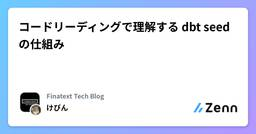
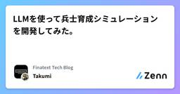

Finatext Tech Blogのフィード
https://zenn.dev/p/finatext
『金融を"サービス"として再発明する』Finatextグループのテックブログです。
フィード

コードリーディングで理解する dbt seed の仕組み 1
1
Finatext Tech Blogのフィード
はじめにこんにちは！ナウキャストのデータエンジニアのけびんです。皆さん dbt の seed は使っていますか？ナウキャストでも使っている機能なのですが、利用する中で dbt seed の仕組みについて理解できていなかったポイントがあり、バッチジョブがエラーになってしまったことがありました。本ブログでは dbt-adapter のコードも紹介しつつ dbt seed の仕組みについて解説します。!本ブログの検証は弊社の Snowflake 環境で行っております。また dbt-adapter のコードの引用は主に Snowflake に関するものになります。他のDWHでも大き...
2日前

LLMを使って兵士育成シミュレーションを開発してみた。
Finatext Tech Blogのフィード
はじめにこんにちは。ナウキャストでデータエンジニアをしているTakumiです。2025年6月25日にCitySim: Modeling Urban Behaviors and City Dynamics with Large-Scale LLM-Driven Agent Simulation という論文がWoven by TOYOTAから発表されました。この論文では、LLMを用いて都市計画のシミュレーションを行う手法を紹介しています。論文を読んで、AI Agentの自由度シミュレーションを行うための環境制約を美しく融合させており、とても面白いと思いました！解説とそ...
6日前

【AI OCR】マルチモーダル LLM を使った証明書 AI OCR のベストプラクティス
Finatext Tech Blogのフィード
はじめにこんにちは、ナウキャストで LLM エンジニアをしている Ryotaro です。先日、Finatext グループで生成 AI コンテストが開催されました。テクノロジー部門のテーマは 「AI を活用した新規価値創造/業務改善アプリケーションの AI 駆動開発」というもの。我々のチームは、マルチモーダルの LLM を使って証明書から情報を抽出する AI OCR システムを作りました。今回は、そのシステムの作成についてお話しします。 システムの概要このシステムは証明書の画像をアップロードすると、AI があらかじめ指定した項目の情報を抽出してくれる API です。イメー...
12日前
複数の dbt プロジェクトに対応！ dbt-docs を Snowflake で効率的にホスティングする方法（SiS vs SPCS）
Finatext Tech Blogのフィード
背景はじめまして、株式会社ナウキャストでデータエンジニアをしている高橋です。弊社では、Snowflakeのデータ変換ツールとして、dbt-coreを利用しています。dbt-coreはオープンソースで無料にもかかわらず、データ変換やモデリング、テスト、ドキュメント生成など、データ基盤の運用に役立つ多くの機能が揃っており、とても便利なツールです。2025年6月時点では、dbt project on Snowflakeの機能がPuPrされており、Snowflake上でdbtの開発・運用ができるようになることが想定されます。しかし、dbt-coreは無料で便利な反面、dbt Cloudの...
19日前
たった一人、AIを相棒に。チーム戦のAIコンテストを勝ち抜いた回顧録
Finatext Tech Blogのフィード
Phase0：はじまり「チームで参加してください」――。ビジネスコンテストの募集要項にあるこの一文に、頭を抱えた経験はありませんか？ 私がそうでした。入社して間もない時期だったこともあり、まずは自分の力でどこまでできるか挑戦してみたいという思いが強くありました。悩んだ末、私は決断しました。「よし、一人でやってみよう。AIを相棒にして」。これは、私がAIチャットボットを戦略パートナー、ブレスト相手、そして資料作成アシスタントとして駆使して、チーム戦のビジネスコンテストにたった一人で挑み、決勝の舞台で賞を獲得するまでの、試行錯誤の全記録です。 Phase1：AIとの戦略会議「...
19日前
97.5%の精度を実現！Gmailで動く反社チェックAIを1日で作ってみた
Finatext Tech Blogのフィード
こんにちは！Finatextのクレジット事業で、エンジニアをしている名澤です。突然ですが、皆さんは子供の時、夏休みの課題は計画的に進められる方でしたか？僕は最終日にまとめてやろうとして、結局終わらず先生に怒られるタイプでした。今回社内のAIコンテストが開催され、「チームクレジット」として、賞金総額100万円に目が眩みエントリーしたのはいいものの、気づいた時には提出期限まで残り1日になっていました...「やばい！」と思い、自分が業務で関わる中で「作業に時間がかかる」「やり方が曖昧」な業務を思い返し、1日という制約の中でAIの力を最大限活用してプロダクトを作ることに挑戦しました。...
19日前
GopherCon Europe 2025 に参加しました
Finatext Tech Blogのフィード
Finatextのデニスです。InspireというSaaSを作っています。今回は、6月16～19日にドイツの首都ベルリンで行われたGopherCon EUに参加してきましたので、カンファレンス全体のまとめと感想を語りたいと思います！https://x.com/d_mzgr/status/1934883799911051308 GopherCon Europe とは毎年ヨーロッパで行われるGo言語に関するカンファレンスです。毎年アメリカで行われるGopherConの姉妹カンファレンスでもあります。参加者はおそらく300人くらいだったと思います。ロケーションはベルリンのど真ん中、...
19日前
AWS re:Inforce 2025 に参加しました
Finatext Tech Blogのフィード
Finatextの田島です。先日、AWS re:Inforce 2025 に参加してきました。re:Invent は過去に何度か参加したことがありますが、re:Inforce は初めての参加でした。この記事では、re:Inforceの各種イベントや会場のフィラデルフィアの様子をお伝えします。 イベントの概要AWSにより開催された、セキュリティに特化したカンファレンスです。今年は、6月16日から18日の3日間、フィラデルフィアのPennsylvania Convention Centerで開催されました。世界中から、約6,000人が参加した模様です。近年圧倒的な規模/...
24日前
非エンジニアのデザイナーが、200回の試行錯誤でデザインモック自動生成AIアプリを完成させた話
Finatext Tech Blogのフィード
はじめにこんにちは！Finatextデザインチームの密(@suzukamitsu)と小林(@f_kobayashi)です。この記事では、社内AIコンテストで制作したアプリ「Mocky」について、開発の背景や仕組み、実装で工夫した点などをご紹介します。まだまだ試行錯誤中のプロジェクトではありますが、非エンジニアのデザイナーでもAIを駆使してアプリを制作できた経験として、何か参考になれば嬉しいです！ これ、AIにお願いできるのでは？Finatextでは、BizDevチームがお客様に新しいビジネス提案を行う機会が多くあります。その中でよく出ていたのが、こんな声です。デザイン...
1ヶ月前
Pythonでゼロから作るコーディングエージェント
Finatext Tech Blogのフィード
はじめにこんにちは。ナウキャストでデータエンジニアをしているTakumiです。社内(Finatext HD内)の生成AIコンテストでMultiAgentを利用したシステムをスクラッチで構築しました。具体的には、ユーザーがSlackでメッセージを送信し、コードの記述、レビュー、GitHubでのPR作成までEnd2Endでできるシステムです。コンテストで構築したシステムの概要図は以下の通りです。本記事では、複数のエージェントが協調して動作する本格的なコーディングAgent（Coodinator） に絞って、構築した概要を説明します。!今年、Finatextで開催された生成...
1ヶ月前
エンジニア視点でまとめる認証・暗号関連キーワード
Finatext Tech Blogのフィード
はじめにこんにちは、バックエンドエンジニアのデニスです。普段はGoでSaaSを作っています。私は認証や暗号の専門家ではありませんが、セキュリティ関連のテーマには長い間興味を持っていて、新サービスの認証まわりやデータ漏洩などのインシデントに関するニュース記事のコメント欄やオンライン掲示板をよくチェックしています。そうしたコメントを読んでいると、時々「この人が言っていること間違ってない？」と思う一方で、「もしかしたら自分の方が間違っているかも？」と不安になることがあります。改めて自分で調べてみると、ニュース記事のコメント欄やオンライン掲示板で意見を述べる人たちや私を含めたエンジニ...
1ヶ月前
Snowflake Intelligenceの使い方を徹底解説
Finatext Tech Blogのフィード
!ナウキャストのSnowflake Summit 2025参加記一覧はこちらをご覧ください。https://zenn.dev/finatext/articles/snowflake-summit-2025-summary-nowcast はじめにナウキャストは、Snowflake Summit 2025に13名という大所帯で参加しました。私自身も多くのセッションに参加し、Snowflakeの新機能について学びました。その中でも特に印象に残った「Snowflake Intelligence」について、詳しく解説します。 Snowflake Intelligenceとは？S...
1ヶ月前
[Snowflake Summit 2025 AI/ML系 参加記] day4 / Snowflake AI Research
Finatext Tech Blogのフィード
はじめにこんにちは、ナウキャストで LLM エンジニアをしている Ryotaro です。サンフランシスコで開催された Snowflake Summit 2025 にナウキャストのメンバーで参加しました！本日 Snowflake Summit 2025 の 4 日目は What's New: Snowflake AI Research で話された Snowflake AI の研究内容についてまとめたいと思います！!ナウキャストの Snowflake Summit 2025 参加記一覧はこちらをご覧ください。https://zenn.dev/finatext/articles...
1ヶ月前
[Snowflake Summit 2025参加レポート]新機能 Snowflake Openflow を利用したCDC連携
Finatext Tech Blogのフィード
!ナウキャストのSnowflake Summit 2025参加記の一覧は以下でご覧ください。https://zenn.dev/finatext/articles/snowflake-summit-2025-summary-nowcastナウキャストでデータエンジニアをしている島尻です。Snowflake Summit 2025への参加レポートとして、「Real-Time Insights at Scale: OLTP Database CDC Streaming with Snowflake Openflow, DE201B」というセッションのレポートを速報で公開します。 ...
1ヶ月前
[Snowflake Summit2025 参加記]What's New: Snowflakeの開発者向け最新ツール群
Finatext Tech Blogのフィード
1. はじめに2025年のSnowflake Summitで開催されたセッション「What's New: Build, Test and Deploy Products with Developer Tooling」に参加しました。このセッションでは、Snowflakeが提供する最新の開発者向けツール群について、実際のデモを交えながら詳細に解説されました。今回発表された新しい機能含めた様々なツールに関しても解説され、エンジニアとしては楽しいセッションでした。※ 今回ご紹介するもの以外にも様々なツールが紹介されていましたが、今回は新機能などを中心にご紹介します。!ナウキャスト...
1ヶ月前
[Snowflake Summit2025 参加記] AISQLとVLMでマルチモーダル分析：ハンズオンレポート
Finatext Tech Blogのフィード
!ナウキャストのSnowflake Summit 2025参加記の一覧は以下でご覧ください。https://zenn.dev/finatext/articles/snowflake-summit-2025-summary-nowcast はじめにこんにちは、株式会社ナウキャストの松村です。Snowflake Summit 2025で開催されたハンズオン「Build and Deploy Visual Language Models for Unstructured Data Processing」に参加しました！このハンズオンでは画像・動画・音声といった非構造化データの解析...
1ヶ月前
LifeCycle Policy の導入によるSnowflake Storage Costの最適化
Finatext Tech Blogのフィード
!ナウキャストのSnowflake Summit 2025参加記一覧はこちらをご覧ください。https://zenn.dev/finatext/articles/snowflake-summit-2025-summary-nowcast はじめにこんにちは。ナウキャストでデータエンジニアをしているTakumiです。2025年6月2日〜6月5日で、Snowflake Summit 2025が開催されました。その中で、SnowflakeにStorageのLifeCicle Policyが導入される旨の発表がSessionでありました。どんな機能で、どこまでの効果があるかSe...
1ヶ月前
[Snowflake Summit2025 参加記] パフォーマンス向上のベストプラクティス
Finatext Tech Blogのフィード
はじめにこんにちは！ナウキャストのデータエンジニアのけびんです。昨年に引き続き今年も Snowflake Summit 2025 に参加しております。4日目に "Best Practices for Boosting Your Snowflake Query Performance" というセッションに参加しました。様々なパフォーマンス向上のプラクティスが紹介される密度が濃いセッションで、非常に勉強になりました。本ブログではこのセッションの内容を紹介するとともに、筆者が知っていることを補足していこうと思います。!Snowflake におけるパフォーマンス向上を網羅的に解説す...
1ヶ月前
Snowflakeにおける機密情報の取り扱い セッション参加レポート
Finatext Tech Blogのフィード
!ナウキャストのSnowflake Summit 2025参加記の一覧は以下でご覧ください。https://zenn.dev/finatext/articles/snowflake-summit-2025-summary-nowcast はじめにSnowflake Summit 2025で開催された「Best Practices for Protecting Sensitive Data and Simplifying Compliance」セッションでは、機密データを取り扱うケースにおけるデータガバナンスやセキュリティ、コンプライアンスの最新動向と実践例が紹介されました。本...
1ヶ月前
[Snowflake Summit 2025 AI/ML系 参加記] day3 / Cortex AISQL による高度なデータ分析
Finatext Tech Blogのフィード
はじめにこんにちは、ナウキャストで LLM エンジニアをしている Ryotaro です。サンフランシスコで開催された Snowflake Summit 2025 にナウキャストのメンバーで参加しました！本日 Snowflake Summit 2025 の 3 日目は Platform Keynote で新しく発表された Snowflake Cortex AISQL についてまとめたいと思います！https://zenn.dev/finatext/articles/db766782b40e2c!ナウキャストの Snowflake Summit 2025 参加記一覧はこちらを...
1ヶ月前